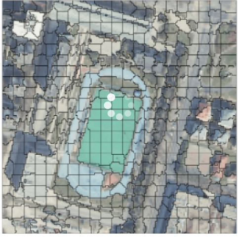
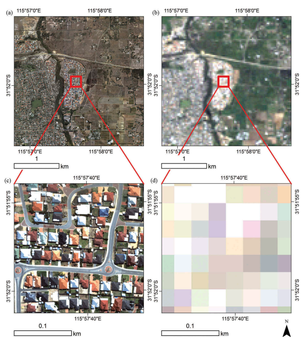
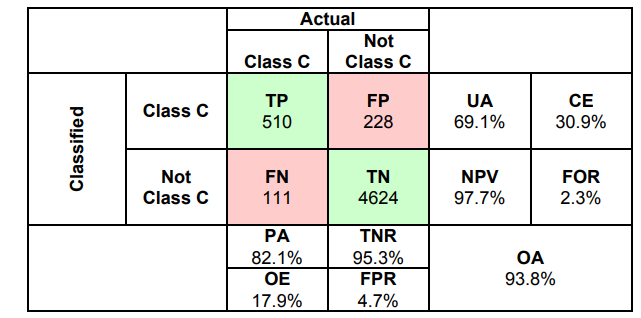
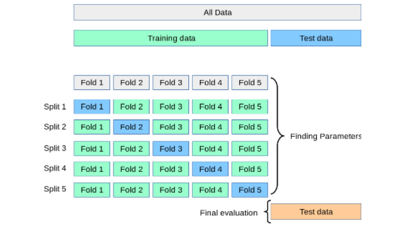
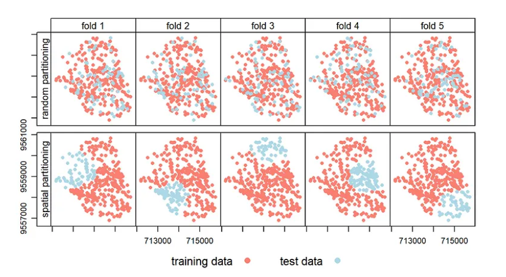
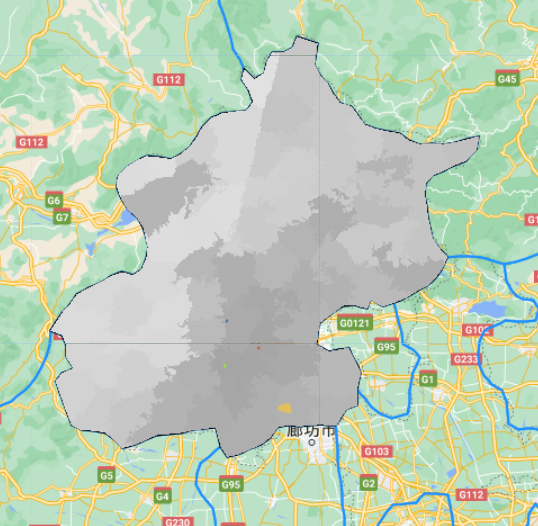
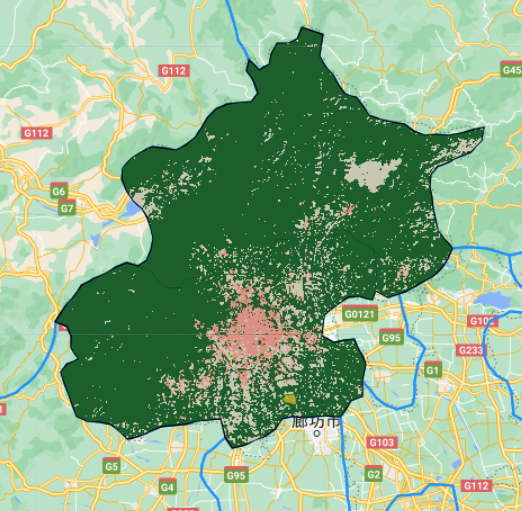
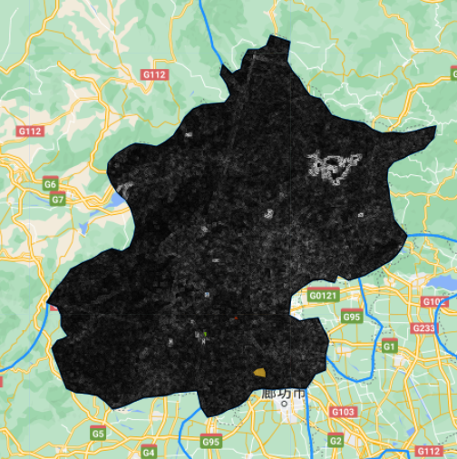
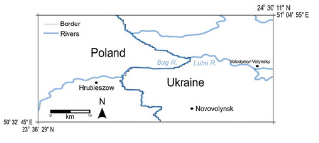
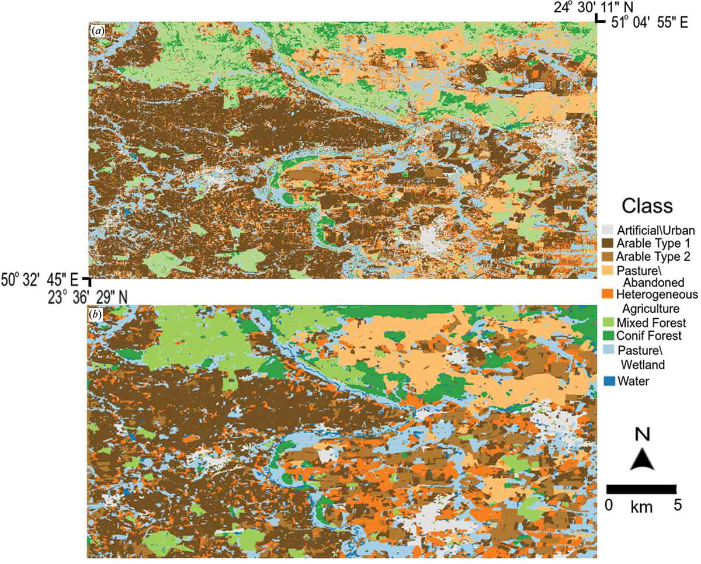

7 Classificaiton 2
7.1 Summary
7.1.1 Landcover classification
7.1.1.1 Object based image analysis and sub pixel analysis(OBIA)
Traditional pixel-based image classification assigns a land cover class per pixel. All pixels are the same size, same shape, and don’t have any concept of their neighbors.
However, OBIA segments an image grouping small pixels together into vector objects. Instead of a per-pixel basis, segmentation automatically digitizes the image for you.
two basic principles of OBIA are:
SEGMENTATION: Break the image up into objects representing land-based features.
CLASSIFICATION: Classify those objects using their shape, size, spatial and spectral There are many methods in object-based image analysis. Superpixels consider the similarity of pixels and homogeneity of the pixels, and Simple Linear Iterative Clustering (SLIC) is one of most common method to generate superpixels.
Application
1.Medical Imaging
2.Object detection (Face, pedestrian detection)
3.Recognition Tasks (Face, Fingerprint recognition)
4.Video Surveillance]
7.1.1.2 Sub-pixel analysis
The sub-pixel analysis is a digital image processing technique that achieves subpixel resolution in images. This means that subpixel resolution can be obtained when the information of a picture exceeds its nominal pixel resolution. For example, in an idea, a position is represented as an integer value (x,y) coordinates and a place where a fractional pixel location might be given.

7.1.1.3 Accuracy assessment
In remote sensing we focus on:
PA Producer accuracy (recall or true positive rate or sensitivity)
UA User’s accuracy (consumer’s accuracy or precision or positive predictive value
OA the (overall) accuracy

7.1.1.4 Test and training data
When we fit the model, there are some approach to fit the model better.
train and test split The dataset is divided into training and testing sets. The training set is used to train the model, while the test set is used to evaluate the model’s performance. This aims to prevent overfitting, where the model performs well on the training data but not on the new data.
cross validation
It tests the model’s performance on the other subsets by dividing the dataset into subsets and then training the model on one of the subsets. This process is repeated multiple times, training and testing with a different subgroup each time. Finally, the average of all test results is used to evaluate the model’s performance.

Spatial cross validation
If there is the patial autocorrelation between training and test sets,we should consider the spatial cross validation.Spatial cross-validation is a method for assessing the performance of spatial prediction models. It is similar to normal cross-validation but takes into account spatial relationships when dividing the dataset. The dataset is divided into subsets in spatial cross-validation, with each subset containing neighbouring observations. The model is then trained on one subset and tested on the performance of the model on the other subsets. This process is repeated several times, each time using a different subset for training and testing.

7.1.1.5 GEE on practical
For this practice I positioned myself in Beijing and classified the polygon into high density urban go, low density urban areas, water bodies and agricultural land for land cover.



7.2 Application
Mapping land cover and land use from object-based classification: an example from a complex agricultural landscape(MacLachlan et al. 2017)
The author quantitatively compared the results of OBIA-based versus per-pixel classifications for both land cover and land use, respectively. Our results show that land-cover classification was not significantly improved when OBIA-based methods were used. Although overall classification accuracy was modest, land-use classification was significantly improved when OBIA-based methods were applied using both spectral and spatial/geometric features of image objects, but not when spectral or spatial/geometric features were used independently.
study area The study area for this analysis was an area along the Ukraine–Poland border, encompassing parts of Volyn oblast (on the Ukrainian side) and Lubelski volveldeship on the Polish side.
- the reason :
It is heavily agricultural, and because it encompasses a variety of agricultural practices that result in fields with contrasting sizes and shapes. It therefore provides a challenging landscape on which to test whether object-based methods can improve land-cover or land-use classification.

Methodology
- using both spectral and spatial/geometric object features (henceforth referred to as OBIA-combined)
- using only object spectral features (OBIA-spectral)
- using only spatial and geometric object properties (OBIA-spatial)
Output

comment:The reading shows that object-based methods can improve the accuracy of land-use classifications, and a visual comparison of OBIA combined and pixel-by-pixel classification results shows that pixel-by-pixel classification has more fine-scale variability or heterogeneity than object-based classification. It is worth noting that, the results presented here were obtained with moderate spatial resolution data. The results may or may not be generalizable to classification performed with finer or coarser resolution data.
7.3 Reflection
Through this week’s study of obia, I have learnt that it is a powerful tool in image analysis and remote sensing applications. These techniques have revolutionised the way we analyse and interpret satellite and aerial imagery, allowing us to extract meaningful information from complex images that would be difficult to obtain using traditional pixel-based methods. These analytical methods have revolutionised the way we analyse and interpret remote sensing data, allowing us to extract more accurate and meaningful information from complex imagery. Through my literature reading, I understand that these techniques are equally important for disaster response, and will study other literature carefully when I have time afterwards.